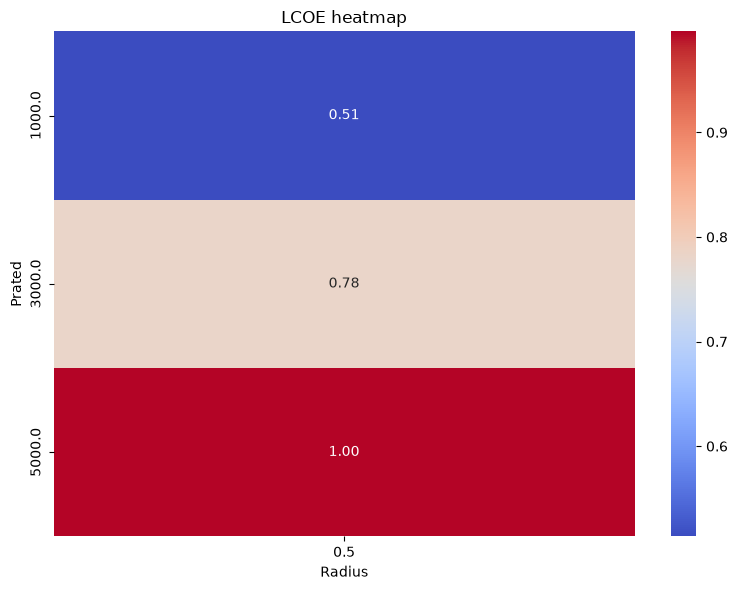

Tutorial 7: Optimizing LCOE (module_lcoe_optimizer)
This tutorial demonstrates how to use the LCOEOptimizer class to search for low-LCOE turbine designs.
The optimizer performs an explicit grid search over user-defined design variables. For each design point, it:
Builds a turbine configuration.
Runs
RotorSimulation.Creates a
VesselDataobject.Checks power, depth, cavitation, and pitch constraints.
Calculates LCOE for feasible designs.
Assigns a penalty value to infeasible designs.
Notes for new users
This is a grid search, not a continuous optimizer.
The search resolution is controlled by the variable bounds and step sizes.
Finer grids give more detail but require more simulations.
Designs that violate constraints or fail during evaluation are assigned a penalty LCOE value of
1e6.The current optimizer returns a dictionary containing the optimal design, full results table, feasible results table, and plotting data.
[1]:
import numpy as np
import urllib3
from IPython.display import display
from vital.module_tidal import process_tidal_data
from vital.module_rotor import RotorData
from vital.module_lcoe_optimizer import LCOEOptimizer
# Suppress warnings caused by NOAA requests using verify=False internally.
urllib3.disable_warnings(urllib3.exceptions.InsecureRequestWarning)
1. Load tidal and rotor data
First, load the tidal resource data and rotor performance data.
The optimizer needs both:
tidal data, which provide flow speeds, time values, mooring distance, and cable length;
rotor data, which provide the rotor coefficient functions used by the simulation.
[2]:
# Tidal data inputs
station = "COI0303"
startdate = "2021-09-01"
range_hrs = 2 * 7 * 24
time_step_s = 3600
city_data_file = "../data/AlaskaCityLatLong.txt"
tidal = process_tidal_data(
station=station,
startdate=startdate,
range_hrs=range_hrs,
time_step_s=time_step_s,
city_data_file=city_data_file,
)
print(f"Data source: {tidal.source}")
print(f"Station name: {tidal.station_name}")
print(f"Mooring distance: {tidal.mooring_distance:.2f} m")
print(f"Cable length: {tidal.cable_length:.2f} m")
print(f"Number of time points: {len(tidal.times)}")
# Rotor data
rotor_performance_file = "../data/Sitkana_rotor_data_blade_2.txt"
rotor = RotorData(rotor_performance_file)
print()
print(f"Optimal Cp: {rotor.CpOpt:.4f}")
print(f"Optimal TSR: {rotor.TSROpt:.4f}")
print(f"Estimated TSRmax: {rotor.TSRmax:.4f}")
Data source: NOAA
Station name: Port Mackenzie, South of
Mooring distance: 31.10 m
Cable length: 3970.22 m
Number of time points: 336
Optimal Cp: 0.2119
Optimal TSR: 0.7648
Estimated TSRmax: 1.7084
2. Define the base turbine configuration
The optimizer starts from a base turbine configuration.
Design variables specified in variable_bounds will overwrite values in this base configuration. Parameters listed in fixed_params will also overwrite the base configuration during the search.
For this tutorial, we keep the grid intentionally small so the notebook runs quickly.
The drivetrain and generator parameters are held fixed for demonstration. In a real design study, parameters such as rated torque, inertia, gear ratio, and generator constants may need to change with rotor size and rated power.
[3]:
base_config = {
# Baseline values. Some of these will be overwritten by the optimizer.
"Radius": 0.5, # Rotor radius (m)
"Prated": 1000.0, # Rated electrical power (W)
"Trated": 100.0, # Rated generator torque (N m)
"dHub": 7.0, # Hub depth (m)
"number_of_turbines": 2, # Number of turbines
# Site/time inputs
"dMoor": tidal.mooring_distance,
"Uinf": tidal.flow_speeds,
"t": tidal.times,
# Rotor performance functions
"CpFunc": rotor.get_cp,
"CqFunc": rotor.get_cq,
"CtFunc": rotor.get_ct,
"CpOpt": rotor.CpOpt,
"TSROpt": rotor.TSROpt,
"TSRmax": rotor.TSRmax,
# Drivetrain and generator parameters
"Ng": 10,
"Kt": 1.5,
"Rw": 0.5,
"J_d": 10.0,
"B_d": 1.0,
"J_r": 50.0,
# Power-conversion model
"power_model": "simple",
}
3. Define vessel properties
The optimizer creates a VesselData object for each candidate design.
The vessel properties below are representative values for demonstration only. They should be replaced with project-specific vessel or platform properties for design studies.
[4]:
user_vessel_properties = {
"Xm": 5.77, # Horizontal distance from center of rotation (m)
"Zm": 1.65, # Vertical distance from center of rotation (m)
"Kphi": 1.95e6, # Pitch hydrostatic stiffness (N m/rad)
"theta": 45.0 * np.pi / 180.0, # Mooring line angle (rad)
"phi": 10.0 * np.pi / 180.0, # Allowable/representative pitch angle (rad)
"area": 9.5, # Cross-sectional area (m^2)
"Cd": 1.0, # Drag coefficient
}
4. Define optimization variables
The optimizer expects variable_bounds to map each design variable to a tuple of:
(minimum, maximum, step)
For this tutorial, we optimize two variables:
RadiusPrated
We hold dHub and number_of_turbines fixed to keep the grid small and easy to interpret.
This example evaluates:
design points, which is appropriate for a tutorial.
[5]:
variable_bounds = {
"Radius": (0.5, 1.0, 0.25), # 0.5, 0.75, 1.0 m
"Prated": (1000.0, 5000.0, 2000.0), # 1000, 3000, 5000 W
}
fixed_params = {
"dHub": 7.0,
"number_of_turbines": 2,
}
# Count grid points for user awareness.
num_grid_points = 1
for low, high, step in variable_bounds.values():
values = np.arange(low, high + 0.5 * step, step)
num_grid_points *= len(values)
print(f"Number of design points to evaluate: {num_grid_points}")
Number of design points to evaluate: 9
5. Run the optimization
Now create an LCOEOptimizer object and run the grid search.
This example uses the Sitkana-style battery-charging cost configuration:
customer="customer_B"application="battery_charging"BatteryCapacity_kWh=10.0
[6]:
optimizer = LCOEOptimizer(
tidal=tidal,
rotor=rotor,
base_config=base_config,
user_vessel_properties=user_vessel_properties,
)
opt_result = optimizer.optimize(
variable_bounds=variable_bounds,
fixed_params=fixed_params,
customer="customer_B",
application="battery_charging",
BatteryCapacity_kWh=10.0,
lifetime=10,
discount_rate=0.1,
turbulence_intensity=0.0,
)
Solving the initial value problem (IVP) for turbine dynamics...
IVP solving complete.
Testing: {'Radius': np.float64(0.5), 'Prated': np.float64(1000.0)} LCOE: 0.5136269374021034
Solving the initial value problem (IVP) for turbine dynamics...
IVP solving complete.
Testing: {'Radius': np.float64(0.5), 'Prated': np.float64(3000.0)} LCOE: 0.7807437457576142
Solving the initial value problem (IVP) for turbine dynamics...
IVP solving complete.
Testing: {'Radius': np.float64(0.5), 'Prated': np.float64(5000.0)} LCOE: 0.996585568101187
Solving the initial value problem (IVP) for turbine dynamics...
Rated torque exceeded. Switching to open-loop dynamics...
IVP solving complete.
Constraint failure for: {'Radius': np.float64(0.75), 'Prated': np.float64(1000.0)}
Testing: {'Radius': np.float64(0.75), 'Prated': np.float64(1000.0)} LCOE: 1000000.0
Solving the initial value problem (IVP) for turbine dynamics...
Rated torque exceeded. Switching to open-loop dynamics...
IVP solving complete.
Constraint failure for: {'Radius': np.float64(0.75), 'Prated': np.float64(3000.0)}
Testing: {'Radius': np.float64(0.75), 'Prated': np.float64(3000.0)} LCOE: 1000000.0
Solving the initial value problem (IVP) for turbine dynamics...
Rated torque exceeded. Switching to open-loop dynamics...
IVP solving complete.
Constraint failure for: {'Radius': np.float64(0.75), 'Prated': np.float64(5000.0)}
Testing: {'Radius': np.float64(0.75), 'Prated': np.float64(5000.0)} LCOE: 1000000.0
Solving the initial value problem (IVP) for turbine dynamics...
Rated torque exceeded. Switching to open-loop dynamics...
IVP solving complete.
Constraint failure for: {'Radius': np.float64(1.0), 'Prated': np.float64(1000.0)}
Testing: {'Radius': np.float64(1.0), 'Prated': np.float64(1000.0)} LCOE: 1000000.0
Solving the initial value problem (IVP) for turbine dynamics...
Rated torque exceeded. Switching to open-loop dynamics...
IVP solving complete.
Constraint failure for: {'Radius': np.float64(1.0), 'Prated': np.float64(3000.0)}
Testing: {'Radius': np.float64(1.0), 'Prated': np.float64(3000.0)} LCOE: 1000000.0
Solving the initial value problem (IVP) for turbine dynamics...
Rated torque exceeded. Switching to open-loop dynamics...
IVP solving complete.
Constraint failure for: {'Radius': np.float64(1.0), 'Prated': np.float64(5000.0)}
Testing: {'Radius': np.float64(1.0), 'Prated': np.float64(5000.0)} LCOE: 1000000.0
6. Inspect the optimal design
The optimizer returns a dictionary containing:
optimal_paramsoptimal_lcoeresults_tablefeasible_tablevariable_namesfixed_paramssite_paramsgrid
The results_table includes every design point. Infeasible designs are assigned a penalty LCOE of 1e6.
The feasible_table includes only feasible designs.
[7]:
print("Optimal parameters:")
for name, value in opt_result["optimal_params"].items():
print(f" {name}: {value}")
print(f"\nOptimal LCOE: ${opt_result['optimal_lcoe']:.4f}/kWh")
print()
print(f"Total design points: {len(opt_result['results_table'])}")
print(f"Feasible design points: {len(opt_result['feasible_table'])}")
Optimal parameters:
Radius: 0.5
Prated: 1000.0
Optimal LCOE: $0.5136/kWh
Total design points: 9
Feasible design points: 3
7. View optimization tables
The full results table includes both feasible and infeasible designs.
The feasible table excludes penalty-valued designs.
[8]:
print("Full results table:")
display(opt_result["results_table"])
print("Feasible designs only:")
display(opt_result["feasible_table"])
best_row = opt_result["feasible_table"].loc[
opt_result["feasible_table"]["LCOE"].idxmin()
]
print("Best feasible row:")
display(best_row.to_frame().T)
Full results table:
| Radius | Prated | LCOE | |
|---|---|---|---|
| 0 | 0.50 | 1000.0 | 0.513627 |
| 1 | 0.50 | 3000.0 | 0.780744 |
| 2 | 0.50 | 5000.0 | 0.996586 |
| 3 | 0.75 | 1000.0 | 1000000.000000 |
| 4 | 0.75 | 3000.0 | 1000000.000000 |
| 5 | 0.75 | 5000.0 | 1000000.000000 |
| 6 | 1.00 | 1000.0 | 1000000.000000 |
| 7 | 1.00 | 3000.0 | 1000000.000000 |
| 8 | 1.00 | 5000.0 | 1000000.000000 |
Feasible designs only:
| Radius | Prated | LCOE | |
|---|---|---|---|
| 0 | 0.5 | 1000.0 | 0.513627 |
| 1 | 0.5 | 3000.0 | 0.780744 |
| 2 | 0.5 | 5000.0 | 0.996586 |
Best feasible row:
| Radius | Prated | LCOE | |
|---|---|---|---|
| 0 | 0.5 | 1000.0 | 0.513627 |
8. Plot optimization results
The optimizer includes a plotting helper.
[9]:
optimizer.plot_results(opt_result)
Optimal parameters:
Radius: 0.5
Prated: 1000.0

Summary
This tutorial showed how to:
Define a base turbine configuration.
Specify design variables and fixed parameters.
Run an explicit grid-search optimization.
Identify the feasible design with the lowest LCOE.
Inspect and plot optimization results.
For larger studies, increase the number of design variables or use finer step sizes. Keep in mind that the number of simulations grows as the product of the number of values for each variable.